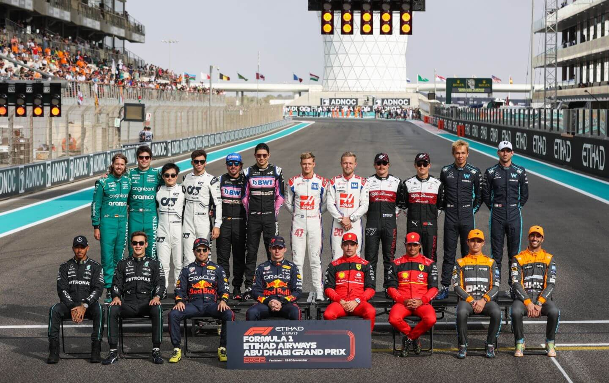

Kierowcy i zespoły
Kierowcy Formuły 1 – wyścigowi artyści i atleci. W Formule 1 nie ma miejsca dla przeciętnych kierowców. Każdy zawodnik, który zasiada za kierownicą bolidu, przeszedł lata treningów, selekcji i wyścigów juniorskich. Ich refleks, odporność psychiczna i przygotowanie fizyczne stoją na poziomie olimpijskim – w wyścigu często decydują ułamki sekund, a jedno mrugnięcie okiem może oznaczać utratę pozycji. Na czele stawki w sezonie 2025 wciąż znajdują się nazwiska dobrze znane fanom – Max Verstappen, Charles Leclerc, Lewis Hamilton – ale coraz większą uwagę przyciągają młodzi kierowcy jak Oscar Piastri, Yuki Tsunoda czy 17 letni Kimi Antonelli . Ich rozwój obserwujemy z sezonu na sezon, a ich przyszłość może zadecydować o kształcie F1 w kolejnych latach.
